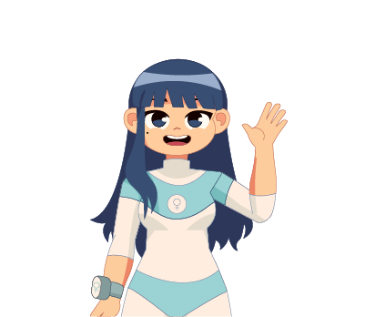

Sumérgete en una narrativa sobre la depresion postparto en nuestro
CÓMIC DIGITAL INTERACTIVO

Sumérgete en una narrativa sobre la depresion postparto en nuestro
Tueris es un proyecto centrado en la realización de un cómic digital interactivo enfocado a una discapacidad mental llamada depresión postparto.
En este proyecto abordaremos la depresión postparto desde el punto de vista de una superheroina que ayuda a mujeres con depresión postparto, donde sé abordarán los síntomas, las causas, las consecuencias y posibles ayudas que puede brindar una persona cercana a la mujer en este proceso, todo esto a través de un cómic digital interactivo que busca concientizar a las personas que la depresión postparto es un problema serio que debe ser tratado a tiempo.
Es una discapacidad mental donde las mujeres experimentan sentimientos de tristeza, desánimo o vacío en los días siguientes al parto, interfiriendo en la vida diaria tanto por sus síntomas en la madre como por las consecuencias sobre las funciones maternas de alimentación, crianza y vinculación afectiva con el recién nacido.
Visibilizar y representar mediante un comic digital interactivo una historia auténtica donde se muestra los desafíos emocionales que enfrenta una madre que lucha contra la depresión postparto y como encuentra ayuda y apoyo para superarla, con el fin de aumentar la conciencia y la comprensión sobre esta discapacidad mental.
Daliabedoyaz@gmail.com
@Daliart_uwu
Me considero una persona creativa, amigable y responsable, amante del arte y siempre con disposición para la realización de mis trabajos y deberes.
"Los sueños comienzan cuando se cree en ellos"